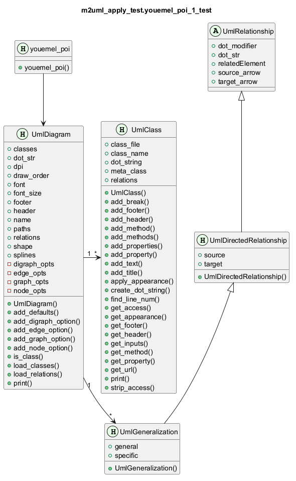

@startuml
title <b>m2uml_apply_test.youemel_poi_1_test</b>
class youemel_poi << (H,#E6FFE6) >> {
+youemel_poi()
}
class UmlClass << (H,#E6FFE6) >> {
+class_file
+class_name
+dot_string
+meta_class
+relations
+UmlClass()
+add_break()
+add_footer()
+add_header()
+add_method()
+add_methods()
+add_properties()
+add_property()
+add_text()
+add_title()
+apply_appearance()
+create_dot_string()
+find_line_num()
+get_access()
+get_appearance()
+get_footer()
+get_header()
+get_inputs()
+get_method()
+get_property()
+get_url()
+print()
+strip_access()
}
class UmlDiagram << (H,#E6FFE6) >> {
+classes
+dot_str
+dpi
+draw_order
+font
+font_size
+footer
+header
+name
+paths
+relations
+shape
+splines
-digraph_opts
-edge_opts
-graph_opts
-node_opts
+UmlDiagram()
+add_defaults()
+add_digraph_option()
+add_edge_option()
+add_graph_option()
+add_node_option()
+is_class()
+load_classes()
+load_relations()
+print()
}
class UmlGeneralization << (H,#E6FFE6) >> {
+general
+specific
+UmlGeneralization()
}
class UmlDirectedRelationship << (H,#E6FFE6) >> {
+source
+target
+UmlDirectedRelationship()
}
class UmlRelationship << (A,#E6FFE6) >> {
+dot_modifier
+dot_str
+relatedElement
+source_arrow
+target_arrow
}
UmlDirectedRelationship -up-|> UmlRelationship
UmlGeneralization -up-|> UmlDirectedRelationship
together {
class UmlRelationship
class UmlDirectedRelationship
class UmlGeneralization
}
youemel_poi --> UmlDiagram
UmlDiagram "1" -right-> "*" UmlClass
UmlDiagram "1" --> "*" UmlGeneralization
@enduml